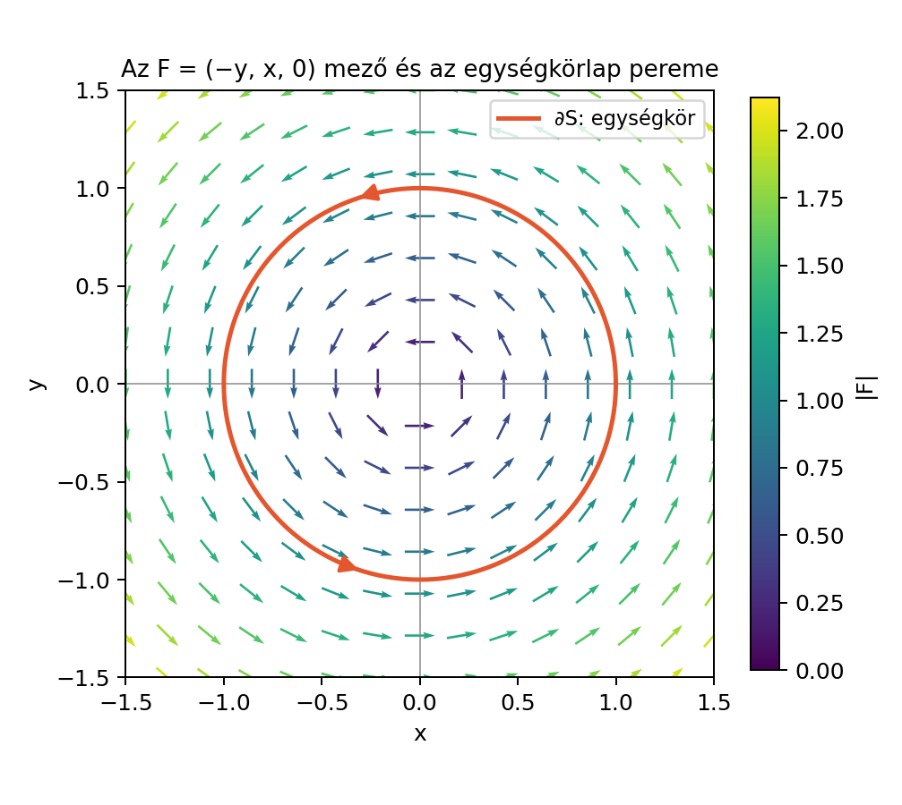

29.4.1 Motiváció: egyetlen tétel,
két látszólag független jelenség
Tegyük fel, hogy egy indukciós főzőlap alatt
nagyfrekvenciás váltakozó áram folyik egy lapos tekercsben. Az áram
időben változó mágneses teret hoz létre, ez a változó mágneses tér pedig
a főzőedény aljában örvénylő elektromos teret, úgynevezett
örvényáramokat indukál. Az örvényáramok az edény
elektromos ellenállásán hőt termelnek, és ez melegíti az ételt. A
jelenség Faraday indukciótörvényére vezethető vissza: egy zárt hurok
mentén az elektromos térerősség vonalintegrálja (az indukált feszültség)
egyenlő a hurok által körülölelt felületen átmenő mágneses fluxus
változási sebességének negatívjával.
Ugyanez a törvény működteti a transzformátort is: a
primer tekercsben folyó váltakozó áram változó mágneses fluxust hoz
létre a vasmagban, a fluxusváltozás pedig a szekunder tekercs minden
menetében feszültséget indukál.
A matematika szempontjából mindkét esetben ugyanaz a kérdés: hogyan
hozható kapcsolatba egy zárt görbén vett vonalintegrál
egy felületen vett felületi integrállal? Erre ad
választ a vektoranalízis egyik központi tétele, a
Stokes-tétel. A tétel a rotációt, azaz a vektormező
lokális örvénylését kapcsolja össze a peremgörbe menti teljes
cirkulációval, és egyúttal a Maxwell-egyenletek integrál- és
differenciálalakjának hídja is.
29.4.2 Szemléletes kép:
körüláramlás és perem
Tekintsük az
vektormezőt. Ez a síkban az origó körül forog; a rotációja minden
pontban
.
Legyen
az egységkörlap az
-síkban,
felfelé mutató normálissal, pereme pedig a pozitív irányítású
egységkör.

Az F = (−y, x, 0) mező és az egységkörlap
pereme - A nyilak a vektormezőt mutatják; a görbe az S felület pereme
pozitív irányítással. A rotáció z-komponense 2, így a Stokes-tétel a
peremintegrált 2π-nek adja.
A perem mentén a mező mindenütt érintő irányú, nagysága pedig
,
ezért a vonalintegrál értéke
.
A felületi integrál oldalán a rotáció normális komponense
,
a felület területe
,
így a rotációfluxus szintén
.
A Stokes-tétel szerint ez nem véletlen egybeesés.
29.4.3 A felület pereme és az
irányítási szabály
A Stokes-tétel kimondásához először rögzítenünk kell, mit értünk
irányított felület peremén.
Definíció. Legyen
szakaszonként sima, irányított felület a térben, azaz válasszunk rajta
egy folytonos
egységnormális-mezőt. Az
pereme
az a szakaszonként sima zárt görbe, amely a felület határát alkotja. A
perem pozitív irányítását a következő
jobbkéz-szabály adja: ha jobb kezünk hüvelykje a
választott
normális irányába mutat, akkor behajlított ujjaink a perem bejárási
irányát jelzik. Ekvivalensen: a felület normális felőli oldaláról nézve
a perem az óramutató járásával ellentétes irányban járható be, tehát a
felület a bejáráskor bal kéz felé esik.
Figyelem. Az irányítás megfordítása előjelet vált.
Ha az
vonalintegrálban megfordítjuk a peremet, az integrál
-szeresére
változik; ezt a felületi normális megfordítása is tükrözi, tehát a két
oldal mindig konzisztens marad.
29.4.4 A Stokes-tétel
Tétel (Stokes-tétel). Legyen
szakaszonként sima, irányított felület a
-ban,
pereme
a fenti jobbkéz-szabály szerint pozitívan irányított szakaszonként sima
zárt görbe. Ha
olyan
vektormező, amely egy
-et
tartalmazó nyílt halmazon értelmezett, akkor
Szavakban: a vektormező peremgörbén vett
cirkulációja egyenlő a rotációjának a felületre vett
fluxusával.
A tételt először grafikonfelületre bizonyítjuk
teljesen: ekkor a peremgörbe egy síkbeli tartomány határának „megemelt”
képe, és a számolást a A Green-tétel
alfejezetben tanult Green-tételre vezethetjük vissza. Az általános
esetet lokálisból globális mintázattal vázoljuk: a
felületet kis cellákra bontjuk, minden cellán alkalmazzuk a
grafikonfelületre vonatkozó eredményt, majd a belső éleken vett
integrálok kiejtik egymást.
29.4.4.2 A grafikonfelület eset
teljes bizonyítása
Legyen
szakaszonként sima határú, korlátos tartomány a
-síkban,
és legyen
egy
függvény. Tekintsük az
grafikonfelületet a felfelé mutató normálissal. Paraméterezzük a
felületet az
leképezéssel. Az indexek a megfelelő parciális deriváltakat jelölik,
például
,
.
A paraméterezés parciális deriváltjai
és
,
ezért a normálvektor
A felfelé mutató normálissal tehát
ahol
.
Legyen
.
A rotáció
A felületi integrál oldala:
Most számítsuk ki a peremgörbén vett vonalintegrált. Ha a
görbe paraméterezése
,
akkor
paraméterezése
Ez pontosan megegyezik a felületi integrál integrandusával. Ezzel
megmutattuk, hogy grafikonfelületre a Stokes-tétel teljesül. ∎
29.4.4.3 Az általános eset
vázlata
Általános
felületet osszunk fel kis cellákra, amelyek már közel grafikonfelületek.
Minden cellán alkalmazzuk a grafikonfelületre vonatkozó eredményt. A
szomszédos cellák közös belső élén a vonalintegrálok ellentétes
irányban járva kiejtik egymást, mert ugyanazt az élt egyszer az
egyik, egyszer a másik cella járja be. Így a cellákra felírt
egyenlőségeket összegezve csak a külső perem
marad:
A felosztást finomítva a jobb oldal a teljes felületre vett felületi
integrálhoz tart. Ez ugyanaz a „lokálisból globális” érvelés, amelyet a
Green-tételnél is láttunk. ∎
Következmény (Green-tétel mint speciális eset). Ha
az
-síkban
fekvő
tartomány,
,
és
,
akkor
ezért a Stokes-tétel visszaadja a Green-tételt:
29.4.5 Felületfüggetlenség azonos
peremnél
A tétel egyik leghasznosabb következménye, hogy a rotáció fluxusa
csak a peremtől függ. Ha
és
két felület, amelyeknek ugyanaz a
pereme, és mindkettőt az adott peremirányításhoz illeszkedő normálissal
látjuk el, akkor
Ez lehetővé teszi, hogy egy nehéz felületi integrál helyett egy
kényelmesen választott felületre számoljunk. Zárt
felületre a perem üres, így
amit a Gauss-tételből és a
azonosságból is megkaphatunk.
Az alábbi ábra a 2. kidolgozott példa adataival
(,
)
mutatja a felületfüggetlenséget és a jobbkéz-szabályt: a paraboloid és a
sík korong pereme ugyanaz a kör, felfelé mutató normálissal mindkettőn
a rotáció fluxusa.
Statikus változat (mint a PDF-ben)
Két felület ugyanazzal a peremmel; mindkettőn
a rotációfluxus, és a felfelé mutató normálishoz a perem pozitív
(óramutatóval ellentétes) körüljárása tartozik
29.4.6 Rotációmentesség és
potenciál létezése
A A rotáció: örvénylés alfejezetben ígértük,
hogy a rotációmentesség és a potenciál kapcsolatát a Stokes-tétellel
bizonyítjuk. Most ezt tesszük meg.
Definíció. Egy
nyílt tartományt egyszeresen összefüggőnek nevezünk, ha
benne minden zárt görbe folytonosan összehúzható egy ponttá, vagy
ekvivalensen: minden benne haladó zárt görbe egy
-ban
fekvő felület pereme. Ilyen például az egész
,
egy gömb belseje vagy egy konvex tartomány. Nem ilyen például a
a
-tengely
eltávolításával.
Tétel (rotációmentes mező potenciálja). Legyen
egyszeresen összefüggő nyílt tartomány, és legyen
egy
vektormező. Ha
az egész
-n,
akkor létezik olyan
függvény, amelyre
Bizonyítási terv. Rögzítünk egy
pontot. Tetszőleges
ponthoz választunk egy szakaszonként sima görbét
-ból
-be,
és definiáljuk az
értéket az
görbe menti vonalintegráljaként. A Stokes-tételből következik, hogy ez
az integrál független az úttól, így
jól definiált. Ezután megmutatjuk, hogy
parciális deriváltjai éppen az
komponensei.
Bizonyítás. Legyen
és
két szakaszonként sima görbe
-ból
-be.
Képezzük a
zárt görbét úgy, hogy
-en
elmegyünk
-ból
-be,
majd
-n
visszafelé
-ből
-ba.
Mivel
egyszeresen összefüggő, létezik olyan
felület, amelynek pereme
.
A Stokes-tétel és a rotációmentesség miatt
Ezért
tehát a két görbe mentén vett integrál egyenlő. Így az
definíció egyértelmű.
Most rögzítsük
-t.
A
kiszámításához vegyük a
-ből
a
pontba vezető rövid, egyenes szakaszt. Az
definíciója miatt
az
tartományon. Ekkor
,
de az origót körülvevő egységkör mentén a vonalintegrál
,
nem nulla. Ezért nincs potenciál; a tartomány nem egyszeresen
összefüggő.
29.4.7 Számolási recept a
Stokes-tételhez
Így alakíts át vonalintegrált felületi integrállá:
ha egy zárt
görbe mentén kell
-t
számolni, a Stokes-tétel gyakran egyszerűbb utat ad.
Ellenőrizd, hogy a görbe zárt legyen; nyílt görbére
a tétel nem alkalmazható.
Válassz egy olyan
felületet, amelynek
a pereme. Általában a leglaposabb felület a
legegyszerűbb: síkbeli tartomány, korong, sokszöglap.
Rögzítsd az
normálisát a jobbkéz-szabály szerint a görbe
irányításához igazodva.
Számítsd ki
-et.
Írd fel az
felületelemet a felület paraméterezéséből:
,
ahol az előjel az irányítást adja.
Értékeld ki a kapott kettős integrált a síkbeli tartományon.
Fordított irányban, ha egy rotációfluxust kell számolni, és a felület
bonyolult, de a perem egyszerű, akkor a peremgörbén vett vonalintegrál a
gyorsabb.
29.4.8 Kidolgozott példa 1:
vonalintegrál Stokes-tétellel
Számítsuk ki az
vektormező cirkulációját az
,
körön, pozitív irányítással.
Megoldás. Válasszuk
-nek
az egységkörlapot az
-síkban,
.
A rotáció:
A felületi integrál:
Tehát a Stokes-tétel szerint
.
Ellenőrzés közvetlen paraméterezéssel. A kör
paraméterezése
,
ahol
.
Ekkor
és
A skaláris szorzat
tehát az integrál
.
A két oldal megegyezik. ∎
29.4.9 Kidolgozott példa 2:
felületi integrál Stokes-tétellel
Legyen
és legyen
a
,
paraboloidfelület felfelé mutató normálissal. Számítsuk ki a rotáció
fluxusát.
Megoldás. A felület pereme az
,
kör. Paraméterezzük:
Ekkor
és
A skaláris szorzat
Integrálva:
A Stokes-tétel szerint tehát
Ellenőrzés közvetlen felületi integrállal. A
rotáció
Az
paraméterezése
,
ahol
,
.
Ekkor
aminek
-komponense
pozitív, tehát felfelé mutat. Így
A kettős integrál:
A
és
tagok integrálja
a teljes perióduson, a maradék:
A két oldal valóban megegyezik. ∎
29.4.10 Valós életbeli alkalmazás:
Maxwell-egyenletek, indukciós főzőlap és transzformátor
A Stokes-tétel és a Gauss-tétel együttesen adja a
Maxwell-egyenletek integrál- és differenciálalakja közötti
kapcsolatot. A szokásos, vákuumban felírt négy egyenlet a
következő.
1. Gauss-törvény az elektromos térre. Integrál
alakban egy zárt
felületen átmenő elektromos fluxus egyenlő a bezárt töltés és az
vákuumpermittivitás hányadosával:
A Gauss-tétel szerint a bal oldal
,
ezért minden
térfogatra
A folytonosság miatt az integrandus nulla, tehát a
differenciál alak:
2. Gauss-törvény a mágneses térre. Zárt felületre a
mágneses fluxus nulla:
amiből ugyanígy
Ez fejezi ki, hogy nincsenek mágneses monopólusok.
3. Faraday-féle indukciótörvény. Zárt
görbe mentén az elektromos tér cirkulációja egyenlő a felületen átmenő
mágneses fluxus változási gyorsaságának negatívjával:
Ha
nyugvó felület, a deriválás bevihető az integráljel alá. A
Stokes-tétellel a bal oldal
így minden
felületre
A folytonosság miatt a differenciál alak:
4. Ampère–Maxwell-törvény. Zárt
görbe mentén a mágneses tér cirkulációja egyenlő a felületen átfolyó
áram és az elektromos fluxus változásából adódó eltolási
áram összegének
-szorosával:
Stokes-tétellel:
tehát
Az eltolási áram tag Maxwell kulcsfontosságú
kiegészítése: enélkül nem lennének elektromágneses hullámok.
Alkalmazás: transzformátor. Egy ideális
transzformátor primer tekercsének menetszáma
,
szekunder tekercsé
,
a primer feszültség effektív értéke
,
a frekvencia
.
Ideális esetben a feszültségek aránya a menetszámok arányával
egyenlő:
A vasmag közös fluxusának amplitúdóját Faraday törvényéből
számíthatjuk. A primer tekercsben indukált feszültség
.
Szinuszos fluxust feltételezve,
,
ahol
,
a feszültség amplitúdója
.
Az effektív értékre
ezért
A Stokes-tétel szempontjából a vasmagban haladó fluxus változása a
szekunder tekercs minden menetében olyan elektromos teret indukál,
amelynek a menet menti cirkulációja éppen a menetben indukált
feszültség.
Alkalmazás: indukciós főzőlap. Szemléltető
modellként tegyük fel, hogy a főzőlap alatti tekercs
frekvenciájú, időben szinuszos mágneses teret hoz létre, amelynek
amplitúdója az edény aljának közelében
.
Vegyünk az edény aljában egy
sugarú kör alakú áramhurkot. A hurok által körülölelt fluxus
amplitúdója
Faraday törvénye szerint a hurokban indukált feszültség
amplitúdója
Ez az érték a hurok mentén az elektromos tér cirkulációja:
.
A Stokes-tétel ezt kapcsolja a mágneses fluxus változásához. A
valóságban az örvényáramok nem egyetlen vékony körben folynak, hanem az
edény aljában eloszlanak; a hőteljesítményt az anyag fajlagos
ellenállása és a szkinhatás is befolyásolja. A fenti
és
szemléltető modellérték, nem mért adat: a valódi készülékek mágneses
terének nagysága és eloszlása ettől jelentősen eltérhet.
29.4.11 Tipikus hibák
Az irányítási szabály elrontása. A leggyakoribb
hiba, hogy a peremgörbe irányát és a felületi normálist nem a
jobbkéz-szabály szerint párosítjuk. Ilyenkor a két oldal előjele eltér.
Ha a normálist adottnak vesszük, a peremet ahhoz kell igazítani; ha a
perem irányítása adott, a normálist fordítva kell választani, különben a
végeredmény
-szeresét
kapjuk.
Nyílt görbére akarjuk alkalmazni a tételt. A
Stokes-tétel bal oldalán zárt görbén vett integrál áll. Ha a görbe nem
záródik, először zárt görbévé kell kiegészíteni, vagy más módszert kell
választani.
A rotációt skalárnak tekintjük. Térben a rotáció
vektor. A Stokes-tételben a rotációnak a felületi normálissal vett
skaláris szorzata szerepel:
.
Síkbeli esetben ez a rotáció
-komponense,
de térben nem hagyható el a normálissal való vetítés.
Zárt felületre rotációfluxus számolása. Ha
zárt felület, akkor
.
Ez azonban nem jelenti azt, hogy
;
csak azt, hogy a rotáció fluxusa minden zárt felületen eltűnik.
Az eltolási áram kihagyása. Az Ampère-törvény
időben változó elektromos térnél nem teljes az
tag nélkül. Ennek elhagyása ellentmondáshoz vezet, és nem adná vissza az
elektromágneses hullámokat.
29.4.12 Önellenőrzés
Igaz-e, hogy a Stokes-tételnél a peremgörbe és a felületi normális
irányítását a jobbkéz-szabály köti össze?
Ha
,
mennyi a
integrál tetszőleges irányított
felületre?
Igaz-e, hogy ha egy vektormező rotációja zérus egy tartományon,
akkor ott mindig van potenciál?
Melyik Maxwell-egyenlet differenciál alakja
?
Miért igaz, hogy zárt felületre a rotáció fluxusa nulla?
29.4.13 Feladatok
1. feladat (A). Számítsd ki Stokes-tétellel az
vektormező vonalintegrálját az
,
ellipszis mentén, pozitív irányítással.
2. feladat (A). Ellenőrizd a Stokes-tételt az
vektormezőre és az
,
körlapra,
felfelé mutató normálissal.
3. feladat (B). Legyen
a
,
paraboloidfelület felfelé mutató normálissal, és legyen
.
Számítsd ki a
felületi integrált a peremgörbén vett vonalintegrállal.
4. feladat (B). Legyen
.
Két felületnek ugyanaz a pereme:
a
síkbeli
körlap felfelé mutató normálissal,
pedig a
,
kupola felfelé mutató normálissal. Mutasd meg a Stokes-tétellel, hogy
,
és add meg a közös értéket.
5. feladat (C). Vezesd le a Green-tételt a
Stokes-tétel speciális eseteként: legyen
az
-síkbeli
tartomány,
,
,
és
.
6. feladat (D). Egy ideális transzformátor primer
tekercse
menetes, szekunder tekercse
menetes. A primer feszültség effektív értéke
,
a hálózati frekvencia
.
Számítsd ki a szekunder feszültséget, valamint a vasmagban a közös
mágneses fluxus amplitúdóját. Ellenőrizd a fluxusból visszaszámolva a
primer feszültséget.
29.4.14 Megoldások
29.4.14.1 Önellenőrzés –
válaszok
Igaz; a jobbkéz-szabály biztosítja a perem és a normális konzisztens
irányítását.
,
mert
rotációja zérus, vagy közvetlenül a Newton–Leibniz-tételből: a potenciál
megváltozása zárt görbén nulla.
Hamis. Csak egyszeresen összefüggő tartományon
igaz; ellenpélda a
mező a
-tengely
nélküli téren.
A Faraday-féle indukciótörvény differenciál alakja.
Mert a Stokes-tételben a perem üres, vagy mert
,
és a Gauss-tétel szerint a rotáció zárt felületi fluxusa nulla.
29.4.14.2 1. feladat megoldása
Az ellipszis egyenlete
,
tehát féltengelyei
,
,
területe
.
A rotáció
.
Válasszuk
-nek
az ellipszislemezt az
-síkban,
.
Ekkor
29.4.14.3 2. feladat megoldása
A rotáció
.
A felületi integrál:
A peremkör paraméterezése
,
.
Ekkor
így
Az integrál:
A két oldal megegyezik. ∎
29.4.14.4 3. feladat megoldása
A felület pereme a
síkban fekvő
kör. A jobbkéz-szabály szerint felfelé mutató normális esetén a peremet
felülről nézve pozitív irányban járjuk be. Paraméterezés:
Ekkor
és
A skaláris szorzat:
Tehát
29.4.14.5 4. feladat megoldása
Mindkét felület pereme ugyanaz a kör:
,
.
A Stokes-tétel szerint mindkét rotációfluxus egyenlő a közös
peremen vett vonalintegrállal:
Számítsuk ki a vonalintegrált. A perem paraméterezése
,
ahol
.
Ekkor
így
Az integrál:
Tehát a közös érték
.
Ellenőrzés
-en:
és
,
így
,
és
.
29.4.14.6 5. feladat megoldása
Legyen
a
tartomány az
-síkban,
,
és legyen
A rotáció:
A Stokes-tétel szerint:
A bal oldalon a térbeli vonalintegrál a
síkban éppen
tehát megkaptuk a Green-tételt.
29.4.14.7 6. feladat megoldása
Az ideális transzformátor feszültségáttétele:
A fluxus amplitúdója az
összefüggésből, ahol
:
Ellenőrzés:
visszahelyettesítésével
ami a kerekítések mellett visszaadja a
primer feszültséget.
29.4.15 Rövid összefoglaló
A Stokes-tétel irányított
felületre és az azzal jobbkéz-szabály szerint irányított
peremre:
Ez a Green-tétel térbeli általánosítása. A tételt grafikonfelületre
teljesen bebizonyítottuk: a peremgörbe vonalintegrálját a Green-tétellel
alakítottuk felületi integrállá, és az eredmény a rotáció fluxusát adta.
Az általános esetben a felületet kis cellákra bontva a belső élek
integráljai kiejtik egymást.
A Stokes-tételből azonnal következik, hogy a rotáció fluxusa
csak a peremtől függ: azonos peremű felületekre
ugyanannyi. Egyszerűen összefüggő tartományon
esetén
potenciálos, mert a vonalintegrál útfüggetlen. A tétel adja a
Maxwell-egyenletek integrál- és differenciálalakjának
kapcsolatát is: Faraday törvényéből
,
az Ampère–Maxwell-törvényből pedig
.
A Newton–Leibniz-, Green-, Gauss- és Stokes-tétel közös szerkezete: a
perem menti integrál egyenlő a megfelelő derivált belső
integráljával.
A Stokes-tétel, a rotációmentes mező potenciáljának tétele és a
Maxwell-egyenletek klasszikus tankönyvi anyag, például Marsden–Tromba
Vector Calculus, Stewart Calculus és Laczkovich–T. Sós
Analízis című munkáiban. Oldalszámot és tételszámot nem adok
meg, mert azokat nem ellenőriztem. Az indukciós főzőlapra és a
transzformátorra adott számértékek szemléltető
modellértékek, nem mért vagy gyártói adatok; a valós készülékek
paraméterei ettől eltérhetnek. Az általános Stokes-tétel
differenciálformákkal meghaladja e fejezet kereteit, ezért itt nem
tárgyaltuk.